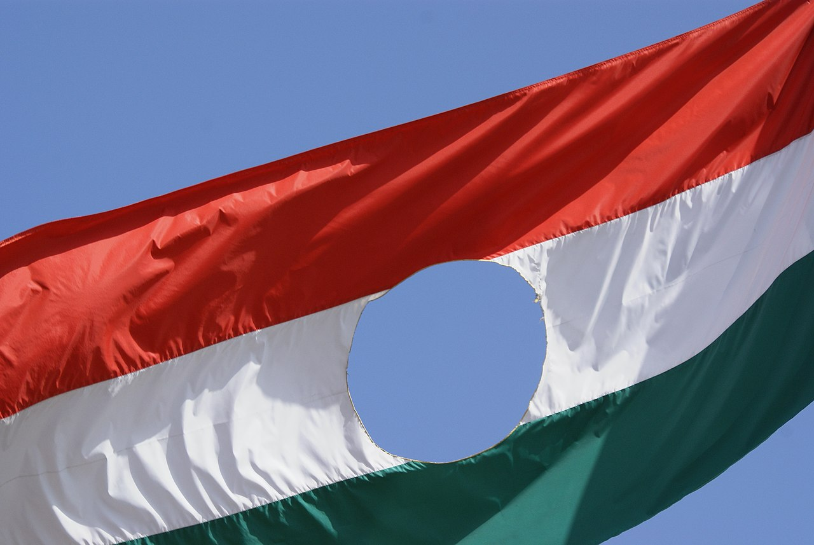

1953-ra a magyar gazdaságban súlyos zavarok léptek fel. A tervezett 50%-os emelkedés helyett a lakosság életszínvonala csökkent, a félelem és kiábrándulás légköre uralkodott el az országban. Meghalt Sztálin, ezek után a szovjet vezetés helyreállította diplomáciai kapcsolatait, belpolitikai enyhülést következett be. A kommunista rendszer stabilitása és a szovjet tábor megtartása bizonyos korrekciókat igényelt. 1953 júniusában ezért hívták Moszkvába a Rákosi, Gerő, Nagy Imre és Hegedűs András vezette magyar pártdelegációt, s eddigi politikájuk felülvizsgálására szólították fel őket.
Október 23-án reggeltől a diákok által meghirdetett tüntetés engedélyezése körül óriási zűrzavar alakult ki a fővárosban. Reggel a rádió és a legnagyobb számú napilap, a Szabad Nép tényként adta hírül a demonstrációt. A felhíváshoz az Írószövetség, a Petőfi Kör, a párt ifjúsági szervezete, a DISZ, és számos más szervezet csatlakozott. Az MDP vezetése hosszas vita után betiltotta a tüntetést, majd du. két óra körül mégis engedélyezték, mindkét döntést beolvasva a Kossuth Rádióban. Sőt, ezt követően a párt vezetői a párt budapesti tagjait is felszólította a részvételre, hogy az eseményeket legalább mederben tarthassák. Ugyanakkor a város valamennyi stratégiai pontján mozgósították az ÁVH erőit. Három órakor a Bem-szobor talapzatán állva Veres Péter, a Magyar Írók Szövetsége elnöke felolvasta a szervezet kiáltványát a tömegnek, a diákok pedig a tizenhat pontot.
Ezután Zbigniew Herbert lengyel író is köszöntőt mondott, majd Sinkovits Imre elszavalta a Nemzeti dalt. A diákok megkoszorúzták a szobrot; a tüntetők létszáma ekkor már kb. 50 000 fő lehetett, és a tömegnek igazából nem volt vezetője. Valaki kivágta egy nemzeti színű zászló közepéből a szovjet mintájú Rákosi-címert, amit hamarosan minden zászlóval megtettek. A tüntetés a beszédek elhangzása után nem oszlott fel, hanem egyesek javaslatára a menet a Kossuth-hídon át a Parlamenthez vonult meghallgatni Nagy Imrét.
18 órára a Kossuth téren és a környező utcákban kb. 200 000 ember gyűlt össze. A demonstráció szenvedélyektől fűtött, de békés volt. A tömeg követelésére végül este 9 órára a helyszínre siető Nagy Imre megjelent a Parlament ablakában. "Elvtársak!" megszólítása indulatos visszautasítást váltott ki, párton belüli reformokat ígérő, hazatérésre szólító, követeléseiket nem említő beszéde után az emberek csalódottan, haraggal távoztak. A tüntetés ideje alatt Gerő Ernő pártfőtitkár és köre riadóztatta a budapesti és a környékbeli katonai egységeket. Gerő telefonon katonai segítséget kért Hruscsovtól. Még Nagy Imre megjelenése előtt este 8 órakor a Kossuth Rádió közvetítette Gerő Ernő beszédét, amelyben sovinisztának, nacionalistának és antiszemitának nevezte a tüntetést, önmagát a reformok képviselőjének nyilvánította, addigi politikáját helyesnek ítélte és a tüntetők minden követelésétől elzárkózott. 18 óra körül a Dózsa György úti Sztálin-szobornál is tömeg gyűlt össze a tizenhat pont egyik követelése, a szobor eltávolítása céljából. A tüntetők a Himnusz éneklése mellett fél tíz körül végül ledöntötték a 10 méter magas és csaknem 6 tonna súlyú szobrot. A diktátor monumentális szobrából a talapzaton csak a csizmái maradtak, s a népi humor Csizma-térre keresztelte át a helyet. Sztálin feje pedig a pesti utcán hevert.
forrásk: Érettségi.com, wikipédia